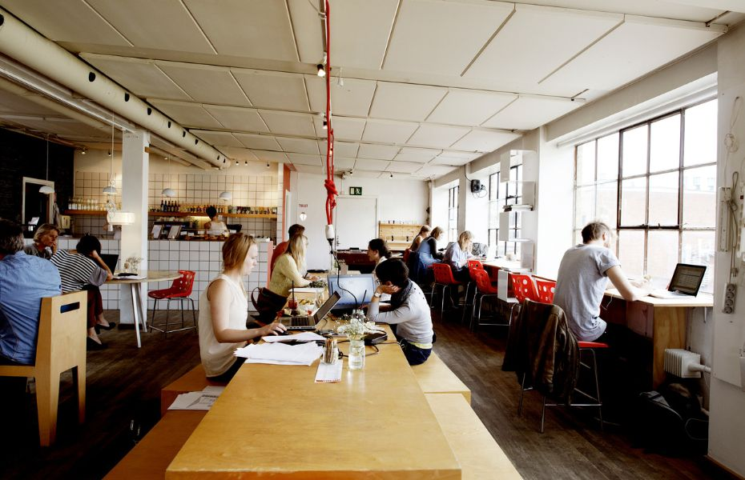
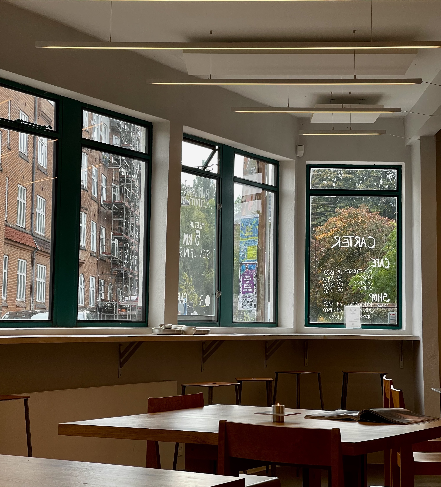
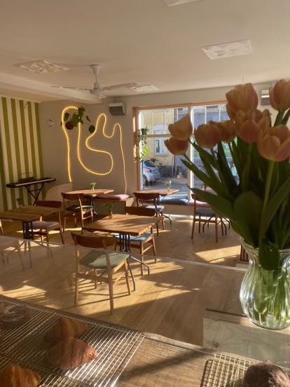

Studie cafeer
Velkommen til Studiesteder i Aarhus, din guide til de bedste steder at studere i byen! Uanset om du søger en hyggelig café, et roligt bibliotek eller en inspirerende læsesal, har vi samlet de bedste steder for studerende i Aarhus. Få det optimale ud af din studietid med vores anbefalinger til både centrale og skjulte perler, der giver dig ro og fokus i studielivet, samt en mere strukturet hverdag, så du kan få tid til flere af de ting, du holder af!
Lynfabrikken
Lynfabrikken er et kreativt arbejdsfællesskab og kulturhus i Aarhus, beliggende i Vestergade. Det fungerer som en platform for iværksættere, kunstnere og kreative professionelle, der arbejder inden for forskellige fagområder som design, teknologi, kunst og kommunikation. Stedet tilbyder kontorfaciliteter, mødelokaler og et åbent caféområde, der tiltrækker både lokale og internationale besøgende. Lynfabrikken afholder også events, workshops og udstillinger, som skaber en dynamisk og inspirerende atmosfære for det kreative miljø i Aarhus.

Carter
Carter er et fantastisk studiesteder i Aarhus, der kombinerer en hyggelig atmosfære med et ideelt miljø til fordybelse. Caféens varme belysning, komfortable siddepladser og rolige stemning gør det perfekt til at sidde med bøger eller laptop i timevis. Der er både plads til gruppeprojekter og stille studier alene. Med lækre kaffedrikke og lette måltider på menuen, kan du nemt gøre en hel studieeftermiddag til en produktiv og afslappet oplevelse.

Maries
Maries er en nyåbnet café, der tilbyder en hyggelig atmosfære og fantastiske tilbud, som er skræddersyet til studerende. Uanset om du skal skrive opgaver, forberede dig til eksamen eller mødes med studiegruppen, er Maries det perfekte sted. Vi har gratis WiFi, masser af strømstik og en rolig, inspirerende indretning, der gør det nemt at fordybe sig i arbejdet. Med studierabatter på både kaffe og lette måltider kan du få mest muligt ud af din tid uden at sprænge budgettet. Kom forbi, og gør Maries til dit nye yndlingssted for produktivitet og hygge!
